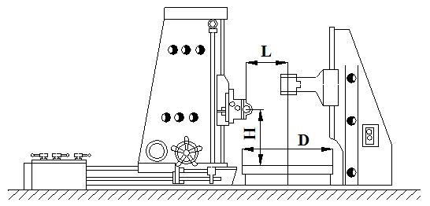
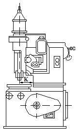

Зубообрабатывающий станок - металлорежущий станок для обработки зубчатых колёс, червяков и зубчатых реек. В зависимости от применяемого инструмента различают зубофрезерные, зубодолбёжные, зубострогальные, зубоотделочные (зубошевинговальные, зубошлифовальные, зубохонинговальные, зубопритирочные, зубообкаточные и зубозакругляющие) станки.
На зубообрабатывающих станках осуществляют: черновую обработку зубьев, чистовую обработку зубьев, приработку зубчатых колёс, доводку зубьев, закругление торцов зубьев.
На зубофрезерных станках нарезают цилиндрические прямозубые, косозубые и с шевронными зубьями колёса, червячные зубчатые колёса. Наиболее распространённые в промышленности вертикальные зубофрезерные станки выпускаются с подвижным столом и неподвижной стойкой и с подвижной стойкой и неподвижным столом. При нарезании зубчатых колёс заготовка жестко связана с делительным червячным колесом, получающим вращение от делительного червяка, который сменными зубчатыми колёсами кинематически связан с червячной фрезой. Соотношение частоты вращения червячной фрезы и заготовки определяется передаточным отношением набора сменных зубчатых колёс.
Наиболее широко применяются зубофрезерные станки, обеспечивающие нарезание зубчатых колёс с модулем от 0,05 до 10 мм и диаметром от 2 до 750 мм.
На зубодолбёжных станках нарезают цилиндрические зубчатые колёса наружного и внутреннего зацепления с прямыми и косыми зубьями, блоки зубчатых колёс, колёса с буртами, зубчатые секторы, шлицевые валики, зубчатые рейки, храповые колёса и т. п. Обычно нарезание производится методом обкатки, реже — методом копирования. Наибольшее применение в промышленности имеют вертикальные зубодолбёжные станки. Режущим инструментом является долбяк, который движется возвратно-поступательно параллельно оси заготовки. Главное (рабочее) движение — Vp, при обратном (холостом) ходе Vx резание не совершается. Движение круговой подачи Sвр осуществляют, сообщая вращательное движение и долбяку, и заготовке в направлениях V1 и V2 с тем, чтобы они вращались так, как вращались бы, будучи в зацеплении, два зубчатых колеса. Для этого долбяк и заготовку соединяют жёсткой кинематической цепью со сменными зубчатыми колёсами и реверсивным устройством. При долблении зубьев колёс с наружным зацеплением направление вращения долбяка противоположно направлению вращения заготовки, а при долблении колёс с внутренним зацеплением эти направления совпадают. Шевронные зубчатые колёса обычно нарезают на горизонтальных зубодолбёжных станках поочерёдно работающими долбяками с косыми зубьями правого и левого направления. Наиболее распространены зубодолбёжные станки для нарезания зубчатых колёс с модулем от 0,2 до 6 мм и диаметром от 15 до 500 мм; для нарезания зубчатых колёс с модулем от 8 до 12 мм, диаметром от 800 до 1600 мм. Обработка по методу копирования осуществляется одновременным долблением всех впадин зубчатого колеса фасонными зуборезными головками. Принцип действия таких головок состоит в том, что фасонные резцы, число которых соответствует числу впадин (зубьев) обрабатываемого зубчатого колеса, укрепленные в головке, производят одновременно (за один проход) долбление всех впадин, после чего разводящее кольцо отводит резцы.
На зубострогальных станках обрабатывают конические зубчатые колёса с прямыми зубьями по методу обкатки одним или чаще двумя резцами. На этих станках воспроизводится зацепление нарезаемого зубчатого колеса с воображаемым плоским производящим зубчатым колесом; при этом два зуба последнего представляют собой зубострогальные резцы, совершающие возвратно-поступательное движение. Таким образом, боковые поверхности каждого из зубьев нарезаемого зубчатого колеса формируются в результате движения резцов и обработки находящихся в зацеплении плоского и нарезаемого зубчатых колёс. Процесс нарезания зубьев происходит при движении резцов к вершине конуса заготовки, а обратный ход является холостым (в этот период резцы отводятся от заготовки). Нарезание конических зубчатых колёс с круговыми зубьями осуществляется методом обкатки на специальных станках с применением зуборезной резцовой головки, представляющей собой диск с вставленными по его периферии резцами, обрабатывающими профиль зуба с двух сторон (первая половина резцов обрабатывает одну сторону, вторая половина — другую). Наиболее распространены зубострогальные станки для нарезания конических зубчатых колёс с модулем от 2,5 до 25 мм и длиной зуба от 20 до 285 мм, для чернового нарезания и чистовой обработки крупногабаритных конических прямозубых колёс с модулем до 16 мм, для чернового и чистового нарезания конических колёс с винтовыми зубьями с модулем до 25 мм.
Зубошевингование (бреющее резание) производится на зубошевинговальных станках. Основано на взаимном скольжении находящихся в зацеплении зубьев инструмента и обрабатываемого зубчатого колеса при встречном движении. По направлению подачи различают три метода зубошевингования: параллельный, диагональный и касательный. Инструментом является шевер — дисковый, реечный и червячный. Первые два типа — для обработки цилиндрических зубчатых колёс, последний — для червячных.
На зубошлифовальных станках производят обработку зубчатых колёс обкаткой и профильным копированием при помощи фасонного шлифовального круга. По исполнению различают зубошлифовальные станки с вертикальным и горизонтальным расположением обрабатываемого зубчатого колеса. В процессе шлифования методом обкатки воспроизводят зубчатое зацепление пары рейка — зубчатое колесо, в котором инструментом является шлифовальный круг (или круги), имитирующий рейку. Шлифовальные круги совершают вращательное и возвратно-поступательное движения; последнее — аналогично воображаемой производящей рейке. Обкатываясь по поворачивающемуся (в обе стороны) обрабатываемому зубчатому колесу, шлифовальные круги своими торцами шлифуют поверхности зубьев. По методу обкатки работают также станки с использованием в качестве инструмента абразивного червяка.
На зубохонинговальных станках осуществляют обработку прямозубых и косозубых колёс с модулем 1,25—6 мм, а также зубчатых колёс с фланкированными и бочкообразными зубьями для уменьшения шероховатости поверхности профиля зубьев.
Зубохонингование производят на станке, аналогичном шевинговальному, при скрещивающихся осях инструмента (зубчатого хона) и обрабатываемого зубчатого колеса, но не имеющем механизма радиальной подачи. Устанавливаемое в центрах станка зубчатое колесо совершает, кроме вращательного (реверсируемого), также и возвратно-поступательное движение вдоль своей оси. Зубчатый хон представляет собой зубчатое колесо с геликоидальным профилем, изготовленное из пластмассы и шаржированное абразивным порошком, зернистость которого выбирается в зависимости от величины припуска (0,025—0,05 мм) и требований к шероховатости поверхности. Зубохонингование производят при постоянном давлении между зубьями обрабатываемого зубчатого колеса и хона («в распор») или при их беззазорном зацеплении, при постоянном межцентровом расстоянии. Первый способ обеспечивает изготовление зубчатых колёс более высокой точности. Необходимым условием зубохонингования является обильное охлаждение и эффективное удаление металлической пыли с обрабатываемой поверхности.
На зубопритирочных станках после термической обработки зубчатых колёс производят операцию зубопритирки. Инструментом служат притиры — чугунные зубчатые колёса, находящиеся в зацеплении с обрабатываемым зубчатым колесом. Притиры смазывают смесью мелкого абразивного порошка с маслом. Обрабатываемое зубчатое колесо обкатывают тремя притирами. Оси притиров со спиральными или прямыми зубьями наклонены к оси обрабатывающего зубчатого колеса; ось третьего притира параллельна оси обрабатываемого зубчатого колеса и вращается попеременно в разных направлениях для обеспечения равномерной обработки зуба с обеих сторон. Притиры также совершают возвратно-поступательное движение в осевом направлении на длине около 25 мм.
На зубообкаточных станках обрабатывают незакалённые зубчатые колёса в масляной среде без абразивного порошка. Обрабатываемое колесо работает в паре с одним или несколькими закалёнными колёсами-эталонами, изготовленными с высокой точностью. В результате давления зубьев колёс-эталонов в процессе обкатывания и возникающего при этом наклёпа на поверхностях обрабатываемых зубьев сглаживаются неровности. Этот способ отделки применим лишь для зубчатых колёс, не требующих высокой точности, а также не подвергающихся термической обработке.
На зубозакругляющих станках обрабатывают зубья пальцевой конической фрезой, вращающейся и совершающей возвратно-поступательное движение. За один двойной ход фрезы зубчатое колесо поворачивается на один угловой шаг. Перемещение инструмента вдоль зуба осуществляется под действием вращающегося фасонного кулачка. На станках осуществляют закругление прямых и косых зубьев зубчатых колёс наружного и внутреннего зацепления диаметром до 320 мм, а также снимают фаски и заусенцы с торцов зубьев после их нарезки. Во время работы ось инструмента находится в вертикальном положении, а заготовка наклонена к этой оси под углом 30—45°. Станок работает по автоматическому циклу: быстрый подвод инструмента к заготовке, рабочая подача и возврат инструмента в исходное положение. Заготовка закрепляется в приспособлении на оправке.